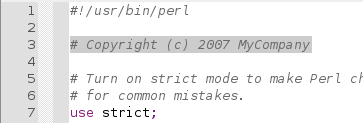
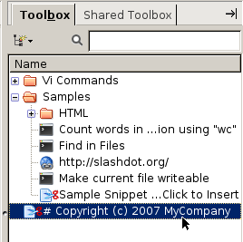

Feature Showcase: Reuse Code Fragments
Create
snippet
from a code fragment. Store it in the
Toolbox
for reuse.

In the Editor Pane, select the code.

Drag and drop the selected code onto the
Toolbox
tab.